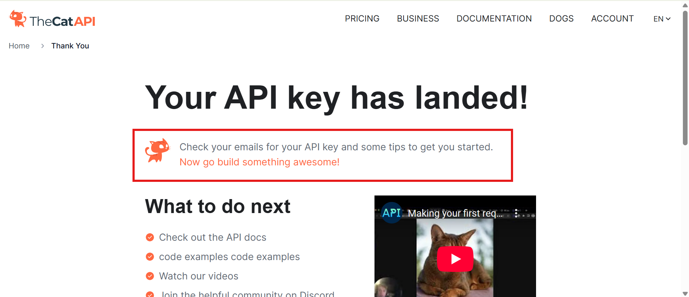
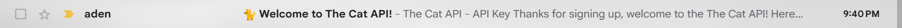
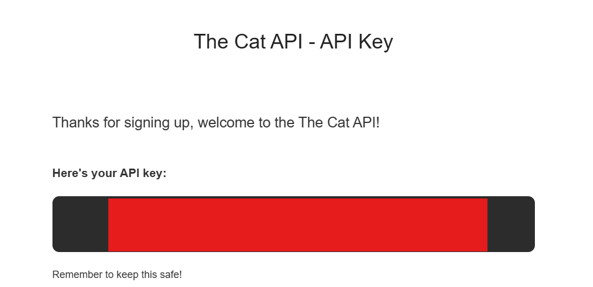

using CatAPI to get images
After creating a CatAPI account, beneath the "Your API key has landed" message, there should have been a notice that you'll be receiving your API key via email.
When you check your inbox, you should have an email that looks like the following:
When you open your email, your api key will be in a grey box, on white text beneath the message "Here's your API key":
Since its considered best practice (for security reasons, especially for paid keys!) to keep your API keys private (learn more about that here), I've blocked my API key with a red box. In this case, since its not for a paid API (each usage doesn't charge you) and it doesn't access private data, I'm only really hiding it to follow that convention.
using an API key
Let's start by looking at how you can use Cat API without an API key. While the more complex functionality requires you to supply an API key, you can still do simpler things like retreive a random image of a cat.
Let's try that out now! This guide will cover calling an API using Javascript, but you can also do it using Python or other languages. Here's the code for getting an image from calling an API:
fetch('https://https://api.thecatapi.com/v1/images/search')
.then(response => response.json())
The fetch command, used above, is just a way to get data from an API. The request takes a URL
learn how to filter and sort results